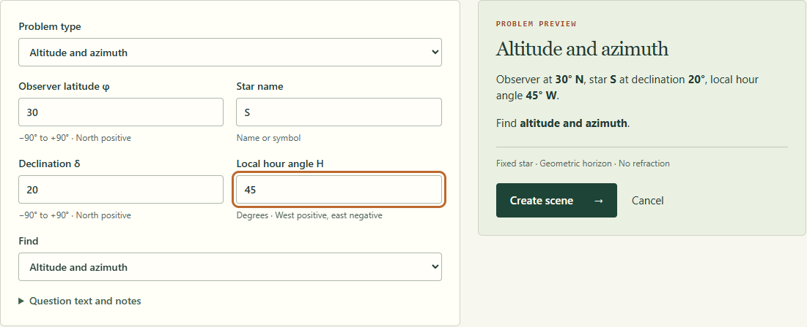
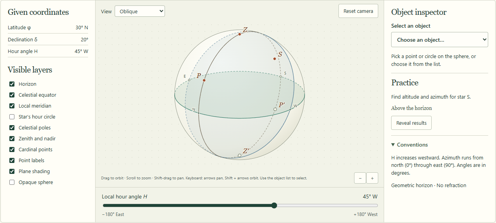
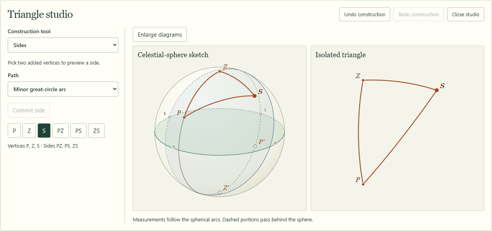

Open the app
Open your AstroSphere Studio address in Chrome or Edge. For the local development copy, start it from the project folder with npm run dev and open the address printed in the terminal, usually http://127.0.0.1:5173/. Initial project setup requires Node.js 24 or later and npm ci.
For a portable built copy, open dist/index.html with its accompanying files in the same folder. The studio opens on a page headed Explore the celestial sphere.
You have opened a source template. Open the studio address or the built dist/index.html. The completed static reference is dist/reference.html.
Use User manual in the studio’s display bar to open this guide in another tab. Keep that tab open while completing the walkthrough.
Your first exercise
Use EX-01 to learn the controls. Your task is to find a star’s altitude and azimuth for latitude +30°, declination +20°, and hour angle +45°.
- On the Studio page, scroll to Practice library and choose EX-01 — Star altitude and azimuth. This opens the scene directly. To practise entering the same values yourself, choose Build a problem, enter the values in the table below, and select Create scene.
- Look at the sphere and locate P, Z and S. Use Select an object in the right-hand inspector if points overlap. Camera movement changes your view of the scene.
- Choose Construct triangle near the workbench heading. The page scrolls to Triangle studio. Follow the construction instructions to add three vertices, commit three sides, and check four labels.
- Scroll to Solve and review. Choose a spherical rule and enter your own altitude and azimuth. Use Check answer to receive feedback. Get hint supplies the next hint.
- After reviewing the solution, choose Independent redraw and reconstruct the scene on paper.
- Enter a Scenario name in the save panel and choose Save locally. Use Export scenario JSON to keep a shareable backup.
| Builder field | Enter |
|---|---|
| Problem type | Altitude and azimuth |
| Observer latitude φ | 30 |
| Star name | S |
| Declination δ | 20 |
| Local hour angle H | 45 |
| Find | Altitude and azimuth |

Enter plain numbers in the coordinate boxes. The app supplies degree symbols and direction labels.
Find your way around

| Area | Use it for |
|---|---|
| Left — Given coordinates and Visible layers | Review φ, δ and H. Show or hide the horizon, equator, meridian, poles, zenith, cardinal points, hour circle and labels. |
| Centre — Interactive sphere | Orbit and zoom; select reference objects; switch to a canonical view. |
| Right — Object inspector and Practice | Select an object from a list, read its meaning, see whether the star is above the horizon, and explicitly reveal results. |
| Below the sphere — Hour-angle slider | Move H to explore the star’s daily path. In meridian culmination it stays fixed at 0°. |
| Save panel | Name a scenario, save it, export JSON, reset the question or open diagram export. |
| Solve and review | Choose a rule, request hints, check answers, view steps or enter redraw mode. |
| Triangle studio | Add vertices, sides and labels while viewing the sphere sketch and isolated triangle. Select Construct triangle to open this section. |
Move the camera
Drag empty space to orbit, scroll to zoom, and Shift-drag or right-drag to pan. Use the + and − buttons for zoom. Reset camera returns to the default oblique view.
The View menu offers Horizon-level, Equatorial and Pole-centered. Triangle-normal appears for a valid triangle. Free orbit identifies a manually moved camera.
Dashed arc portions pass behind the sphere. Opaque sphere hides rear geometry. If a point is hard to click, select it from the inspector list.
Recognize the symbols
P is the north celestial pole, P′ the south celestial pole, Z the point directly overhead, and Z′ the point directly below. The italic S marks the star. The smaller horizon letters N, E, S and W mark compass directions.
The horizon is perpendicular to the observer’s vertical. The celestial equator is perpendicular to the pole axis. The local meridian passes through the poles and zenith.
Build the P–Z–S triangle
Choose Construct triangle. For the first attempt, use the P, Z and S buttons inside Triangle studio. These work even when objects overlap on the sphere.
1. Add the three vertices
- Set Construction tool to Vertices.
- Choose P, then Add vertex.
- Choose Z, then Add vertex.
- Choose S, then Add vertex.
Check that the status line lists Vertices P, Z, S. Choosing a point selects a candidate; the Add vertex button commits it.
2. Commit the three sides
- Set Construction tool to Sides. Keep Path set to Minor great-circle arc.
- Choose P and then Z. A dashed preview appears. Choose Commit side PZ.
- Choose P and then S. Choose Commit side PS.
- Choose Z and then S. Choose Commit side ZS.
A great circle is the intersection of the sphere with a plane through its centre. The minor arc is the shorter route along that circle between two endpoints. A declination parallel generally follows a small circle, so it cannot supply the required triangle side.

3. Assign the angular relations
Set Construction tool to Labels. For each row below, select the target button, choose its Angular relation, then choose Check label.
| Target button | Angular relation | Reason |
|---|---|---|
| PZ | 90° − φ | Pole-to-zenith distance complements observer latitude. |
| PS | 90° − δ | Polar distance complements declination. |
| ZS | 90° − h | Zenith distance complements altitude. |
| P | |H| (principal angle) | The included angle between PZ and PS comes from local hour angle. Both sides must already exist. |
For H outside the principal range, use the equivalent interior angle from 0° to 180°. Keep the east/west sign of H for azimuth reasoning.
Correct a construction
Undo construction reverses the latest vertex, side or checked label. Redo construction restores it. Press Escape to discard unfinished endpoint choices and return to Inspect. Choose Enlarge diagrams to stack larger drawings vertically.
Select a side in the interactive sphere, the sketch or the isolated triangle to highlight the corresponding side across the views. Measurements refer to spherical arcs and angles; their screen appearance depends on the projection.
Use hints and check your solution
Scroll to Solve and review. Begin by selecting Cosine rule for sides in Spherical rule, then choose Check rule.
| Control | What happens |
|---|---|
| Get hint | Reveals one more of three graduated hints. Hide hints collapses their text. The help count records the requested hints for this session. |
| Show next solution step | Reveals the next line of the worked procedure. |
| Show full solution | Enters Demonstrate mode and displays the complete worked procedure. A valid triangle receives a completed geometry overlay. |
| Hide solution and return to practice | Returns to Independent mode and restores your own construction. |
| Reveal results in the inspector | Shows numerical horizon coordinates separately from the worked procedure. |
For altitude and azimuth questions, select Angle units, enter Your altitude and Your azimuth, then choose Check answer. Numeric feedback uses a 0.01° tolerance after unit conversion. Azimuth checks account for the 0°/360° wrap.
At zenith, nadir or an unorientated geographic pole, enter undefined for azimuth. In a rising/setting exercise, select a Daily visibility classification instead.
Changing coordinates flags existing guesses for review. Recheck against the displayed givens. Current hint history, guesses and solution-step progress last for the active session.
Redraw on paper
- After reviewing your reasoning, choose Independent redraw.
- Using the givens, draw the horizon, celestial equator, pole, zenith and star on paper. Add the relevant great-circle arcs.
- Write the side relations and explain the hour-angle sign and azimuth quadrant.
- Choose Return to practice to compare against your construction.
Redraw hides derived construction overlays, checked diagram measurements and the result reveal control. Your earlier construction remains available when you return.
Enter your own problem
Choose Problem builder in the top navigation for a new scenario. Use Edit problem from the workbench to modify the current one, then choose Apply changes.
| Quantity | Convention and example |
|---|---|
| Latitude φ | −90° to +90°. North is positive. Enter -30 for 30° S. |
| Declination δ | −90° to +90°. North of the celestial equator is positive. |
| Hour angle H | West is positive. Enter 45 for 45° W or -45 for 45° E. Full turns are normalized; 405° becomes 45° W. |
| Altitude h | Height above the geometric horizon, from −90° to +90°. A negative value places the star below the horizon. |
| Azimuth A | North 0°, east 90°, south 180°, west 270°. |
If a problem supplies H in hours, convert using 15° per hour before entering it. For example, 3 hours west becomes +45°.
Expand Question text and notes to include the original wording or teaching notes. Review Problem preview before creating the scene.
The current model uses fixed-star directions, a geometric horizon and idealized spherical geometry. H controls the local angular position. Real dates, UTC, right ascension, refraction and moving solar-system objects require additional modelling.
Choose another exercise
The three example cards open a prefilled builder. The five Practice library entries open scenes directly.
| Exercise | What to investigate |
|---|---|
| EX-01 — Star altitude and azimuth | Complete the standard P–Z–S construction and check the quadrant. |
| EX-02 — Meridian culmination | Inspect H = 0°. Vertices lie on one great circle, so the app explains the collapsed triangle. Use zenith distance or the coordinate relation to find altitude. |
| EX-03 — Equatorial observer | At φ = δ = 0°, compare H = +90° with −90°. Observe west and east horizon positions. |
| EX-04 — Circumpolar star | Move H through the daily path and classify visibility from its highest and lowest altitudes. H starts at upper transit. |
| EX-05 — Observer at the pole | P and Z coincide. Altitude remains meaningful while the usual triangle collapses. A geographic azimuth needs an adopted orientation. |
Rising and setting labels describe visibility over a daily rotation. A zero minimum or maximum can represent a tangency. A real clock time requires a time model.
Save, reopen and share a scenario
Save in this browser
- Scroll to the panel containing Scenario name.
- Enter a recognizable name, then choose Save locally. Reusing a saved name asks whether to replace it.
- Later, open Saved scenarios and import near the top of the app. Choose Open beside your saved name.
A saved scenario retains inputs, the original question baseline, layers, camera position, construction, learning mode and result visibility. Choose the desired learning mode before saving. Hint history, guesses and undo history belong to the active session.
Share or back up a file
- Choose Export scenario JSON. Your browser downloads an AstroSphere scenario file.
- On the receiving browser, open Saved scenarios and import and select the file with Import scenario JSON.
- Review the preview, then choose Open imported scenario. Cancel import dismisses the preview. Choose Save locally afterwards if you want it in that browser’s library.
Local saves belong to the current browser and address. Switching between a local file, localhost and a hosted site gives you separate libraries. Keep exported JSON files for backup.
| Control | Scope |
|---|---|
| Reset camera | Restores the default camera view. |
| Undo / Redo at the workbench heading | Reverses or reapplies coordinate edits. |
| Undo construction / Redo construction | Reverses or reapplies triangle work. |
| Reset to question | After confirmation, restores baseline question inputs and Independent mode. Use construction undo controls for triangle edits. |
| Delete beside a saved entry | After confirmation, removes that browser-library entry. |
Save or export before opening another exercise or refreshing the page.
Export a diagram
- Complete your own construction, or choose Show full solution for a completed demonstration.
- Choose Export diagrams in the save panel.
- Select Full celestial sphere or Isolated triangle from Diagram.
- Choose Grayscale print, Transparent background, Conventions note and Diagram labels as needed.
- Inspect the preview. Use Download SVG for scalable vector output or Download PNG for a raster image. PNG resolution choices range from 800 × 800 to 3200 × 3200 pixels.
The full sphere uses the current camera orientation fitted into the page, with checked measurements in a legend below it. The isolated triangle uses its own fitted view. Downloaded diagrams follow the current construction and learning mode. In Redraw mode, derived construction is concealed.
If the preview has no triangle, return to construction or enter Demonstrate mode. A collapsed triangle can be exported as a full-sphere sketch.
Prepare a coach demonstration
- Open a preset or enter your scenario in the builder.
- Choose the camera orientation and visible layers that support your explanation.
- Use Show next solution step to reveal the derivation gradually. Use the layer checkboxes or construction tools to reveal geometry.
- Choose Show full solution when you want the complete result. Hide demonstration notes collapses the written steps.
- Save the intended starting state and export its JSON file. Reopen the file before presenting to confirm it starts as intended.
- Export sphere and triangle diagrams for the handout.
Keyboard, display and offline access
Use Tab and Shift + Tab to move between controls. Use Enter to activate buttons, arrow keys in lists, and Space on checkboxes. The object inspector and triangle buttons provide alternatives to clicking the drawing.
With the sphere focused, arrow keys pan and Shift + arrow keys orbit. Press Escape to leave an unfinished construction. Use the visible + and − controls for zoom.
Choose High contrast or Grayscale from Display near the top of the app.
When the display bar says Ready for offline use in this browser, the app’s core files are cached. Keep JSON backups, since clearing browser data can remove both cache and local saves. For portable use, keep the entire built app folder together.
This manual has a Print / save as PDF control at the top. Use your browser’s print destination to create a PDF copy.
When you get stuck
| What you see | What to do |
|---|---|
| “Add vertex” is disabled | Choose P, Z or S first. Each vertex is added once. Check the Vertices status line. |
| “Commit side” is disabled | Add both endpoint vertices, then choose two distinct endpoints in Sides mode. An existing side is already committed. |
| “Check label” is disabled | Select a committed side and a relation. For angle P, commit PZ and PS first. A checked label is already recorded. |
| Clicking adds an endpoint when you only want to inspect | Set Construction tool to Inspect, or press Escape. |
| The triangle studio or solving controls seem missing | Scroll below the main sphere. Construct triangle opens and scrolls to the studio. |
| A point is hidden or overlaps another | Use Select an object or the P/Z/S buttons. Try Oblique view, Reset camera, or turn off Opaque sphere. |
| “Coincident”, “antipodal”, or “one great circle” | The usual triangle is degenerate or an arc is nonunique. Read the explanation. Continue inspecting coordinates, or change the problem values for a regular triangle. |
| Azimuth is undefined | At zenith/nadir there is no unique bearing. At a geographic pole an orientation convention is needed. Enter undefined in the azimuth answer box. |
| “Check the quadrant” | Review H’s east/west sign. Azimuth runs north → east → south → west. Use atan2(E, N). |
| An answer is flagged after editing | Recalculate for the current coordinates and select Check answer. |
| Saved scenario is missing | Return to the same browser and app address, or import your JSON backup. |
| Import rejects a file | Select an AstroSphere version 1 scenario JSON smaller than 1 MB. Re-export it from a working scene if the file was edited or damaged. |
| The export is empty or missing labels | Check your construction, learning mode and Diagram labels setting. Use the preview before downloading. |
EX-01 answer check
Show the walkthrough’s numerical answers
| Quantity | Expected result |
|---|---|
| PZ | 60° |
| PS | 70° |
| ZS | 41.71604° |
| ∠ZPS | 45° |
| Altitude h | 48.28396° |
| Azimuth A | 266.89593° |
With degrees selected, 48.28 and 266.90 pass the numerical check. The azimuth places the star slightly south of west.